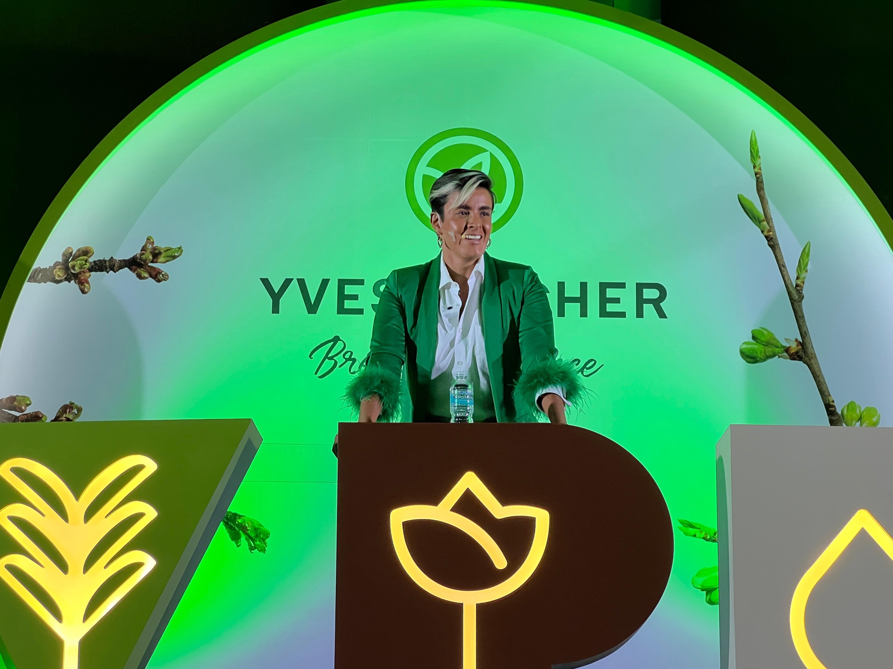

Un mapa concreto de su propio trabajo
Cada líder identifica qué eliminar, qué automatizar, dónde apoyarse en la IA y qué conservar.
Conferencia interactiva · 60 minutos · Herramienta digital en vivo
Tus líderes salen con un plan claro de qué delegar a la IA, qué potenciar y qué capacidades humanas proteger. Una conferencia interactiva de 60 minutos.
Tu equipo ya usa IA. La diferencia la hará el criterio con el que la use.
En una sola sesión, tus líderes salen con un lenguaje común para decidir qué cambiar, qué aprender y qué preservar.
Cada líder identifica qué eliminar, qué automatizar, dónde apoyarse en la IA y qué conservar.
Pasan de preguntar “¿podemos automatizarlo?” a “¿deberíamos, bajo qué condiciones y quién sigue siendo responsable?”.
Detectan qué capacidades de su gente podrían debilitarse si delegan demasiado pronto.
Definen en qué reinvertir el tiempo que libera la IA: estrategia, clientes, innovación y desarrollo de personas.
Una forma compartida de hablar de IA, trabajo y liderazgo que va más allá de la tecnología.
Los resultados agregados de la sala muestran dónde están las oportunidades de rediseño.
La idea central
Una conferencia que combina liderazgo, comportamiento humano, transformación del trabajo e inteligencia artificial. A través de ideas provocadoras, casos reales, investigación y una experiencia digital, los participantes analizan su propio trabajo mientras ocurre la conferencia.
Lo que no es
Una conferencia técnica sobre IAUn taller de promptsConvertir líderes en especialistas tecnológicosLo que desarrolla
El criterio para decidir qué cambiar, qué aprender y qué preservar cuando cambia el contexto.Por qué ahora
La inteligencia artificial está transformando cómo analizamos información, tomamos decisiones, desarrollamos talento, distribuimos responsabilidades y diseñamos el trabajo.
Cuando producir información y alternativas se vuelve fácil, el valor se desplaza hacia evaluar, contextualizar, cuestionar y decidir.
Algunas experiencias que parecen ineficientes son justo las que construyen experiencia, criterio, autonomía y capacidad.
Algunas tareas necesitan participación humana por aprendizaje, criterio, responsabilidad o relación.
La experiencia digital en vivo
Durante la conferencia, cada participante clasifica actividades reales de su trabajo en cinco decisiones. Toca cada una para verla.
Ni reemplazo ni resistencia: combinar inteligencias para elevar la calidad.
Para tu organización
Un marco compartido para hablar de IA, trabajo y liderazgo más allá de lo tecnológico.
Patrones agregados de los mapas de la sala para explorar la transformación.
Qué necesitaremos que nuestra gente sepa hacer mañana que podría dejar de aprender hoy.
Dónde la IA libera tiempo y atención, y en qué reinvertirlo.

Sobre Karla
Conferencista internacional, coach y especialista en comportamiento humano, liderazgo y desarrollo personal. Durante más de 15 años ha acompañado a personas y organizaciones en distintos países a cuestionar las ideas, hábitos y patrones desde los que toman decisiones, trabajan y lideran.
Su enfoque combina investigación, pensamiento crítico y herramientas prácticas para explorar una pregunta: ¿Cómo desarrollamos la capacidad humana necesaria para seguir tomando buenas decisiones cuando las condiciones cambian?
Conocer mi historia